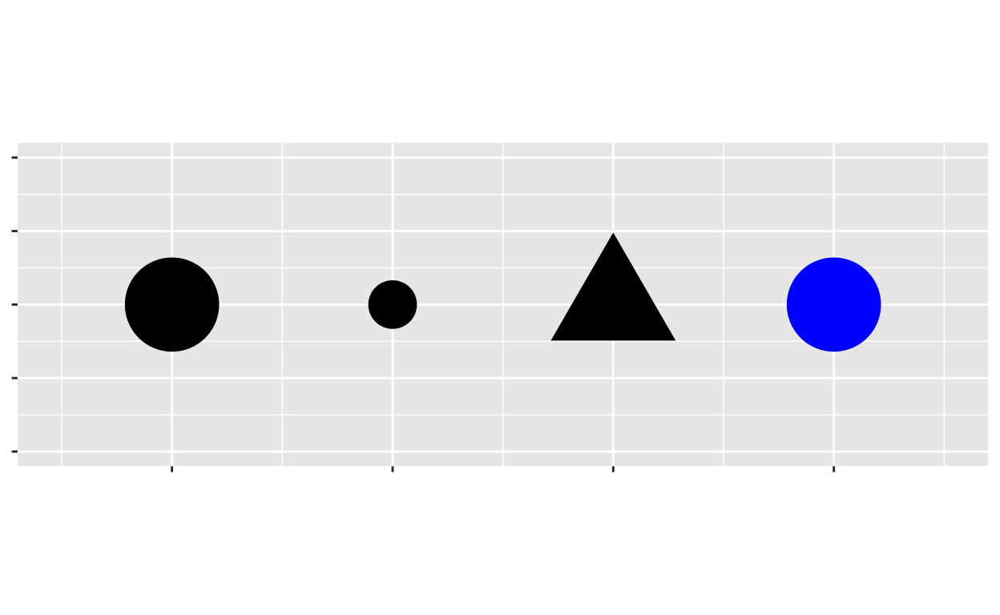

Welcome
Visualization is one of the most important tools for data science.
It is also a great way to start learning R; when you visualize data, you get an immediate payoff that will keep you motivated as you learn. Afterall, learning a new language can be hard!
This tutorial will teach you how to visualize data with R’s most
popular visualization package, ggplot2.
The tutorial focuses on three basic skills:
- How to create graphs with a reusable template
- How to add variables to a graph with aesthetics
- How to make different “types” of graphs with geoms
In this tutorial, we will use the core tidyverse packages, including
ggplot2. I’ve already loaded the packages for you, so let’s
begin!
These examples are excerpted from R for Data Science by Hadley Wickham and Garrett Grolemund, published by O’Reilly Media, Inc., 2016, ISBN: 9781491910399. You can purchase the book at shop.oreilly.com.
A code template
“The simple graph has brought more information to the data analyst’s mind than any other device.” — John Tukey
Let’s begin with a question to explore.
mpg
You can test your hypothesis with the mpg dataset that
comes in the ggplot2 package. mpg contains
observations collected on 38 models of cars by the US Environmental
Protection Agency.
To see the mpg data frame, type mpg in the
code block below and click “Submit Answer”.
mpgYou can use the black triangle that appears at the top right of the
table to scroll through all of the columns in mpg.
Among the variables in mpg are:
displ, a car’s engine size, in liters.hwy, a car’s fuel efficiency on the highway, in miles per gallon (mpg). A car with a low mpg consumes more fuel than a car with a high mpg when they travel the same distance.
Now let’s use this data to make our first graph.
A plot
The code below uses functions from the ggplot2
package to plot the relationship between displ and
hwy.
To see the plot, click “Run Code.”
ggplot(data = mpg) +
geom_point(mapping = aes(x = displ, y = hwy))Can you spot the relationship?
And the answer is…
The plot shows a negative relationship between engine size
(displ) and fuel efficiency (hwy). Points that
have a large value of displ have a small value of
hwy and vice versa.
In other words, cars with big engines use more fuel. If that was your hypothesis, you were right!
Now let’s look at how we made the plot.
ggplot()
Here’s the code that we used to make the plot. Notice that it
contains three functions: ggplot(),
geom_point(), and aes().
ggplot(data = mpg) +
geom_point(mapping = aes(x = displ, y = hwy))In R, a function is a name followed by a set of parentheses. Many functions require special information to do their jobs, and you write this information between the parentheses.
ggplot
The first function, ggplot(), creates a coordinate
system that you can add layers to. The first argument of
ggplot() is the dataset to use in the graph.
By itself, ggplot(data = mpg) creates an empty graph,
which looks like this.
ggplot(data = mpg)
geom_point()
geom_point() adds a layer of points to the empty plot
created by ggplot(). This gives us a scatterplot.
ggplot(data = mpg) +
geom_point(mapping = aes(x = displ, y = hwy))
mapping = aes()
geom_point() takes a mapping argument that
defines which variables in your dataset are mapped to which axes in your
graph. The mapping argument is always paired with the
function aes(), which you use to gather together all of the
mappings that you want to create.
Here, we want to map the displ variable to the x axis
and the hwy variable to the y axis, so we add
x = displ and y = hwy inside of
aes() (and we separate them with a comma).
Where will ggplot2 look for these mapped variables? In the data frame
that we passed to the data argument, in this case,
mpg.
A graphing workflow
Our code follows the common workflow for making graphs with ggplot2. To make a graph, you:
- Start the graph with
ggplot() - Add elements to the graph with a
geom_function - Select variables with the
mapping = aes()argument
A graphing template
In fact, you can turn our code into a reusable template for making
graphs. To make a graph, replace the bracketed sections in the code
below with a data set, a geom_ function, or a collection of
mappings.
Give it a try! Replace the bracketed sections with mpg,
geom_boxplot, and x = class, y = hwy to make a
slightly different graph. Be sure to delete the # symbols
before you run the code.
# ggplot(data = <DATA>) +
# <GEOM_FUNCTION>(mapping = aes(<MAPPINGS>))ggplot(data = mpg) +
geom_boxplot(mapping = aes(x = class, y = hwy))Common problems
As you start to run R code, you’re likely to run into problems. Don’t worry — it happens to everyone. I have been writing R code for years, and every day I still write code that doesn’t work!
Start by carefully comparing the code that you’re running to the code
in the examples. R is extremely picky, and a misplaced character can
make all the difference. Make sure that every ( is matched
with a ) and every " is paired with another
". Also pay attention to capitalization; R is case
sensitive.
+ location
One common problem when creating ggplot2 graphics is to put the
+ in the wrong place: it has to come at the end of a line,
not the start. In other words, make sure you haven’t accidentally
written code like this:
ggplot(data = mpg)
+ geom_point(mapping = aes(x = displ, y = hwy))help
If you’re still stuck, try the help. You can get help about any R
function by running ?function_name in a code chunk,
e.g. ?geom_point. Don’t worry if the help doesn’t seem that
helpful — instead skip down to the bottom of the help page and look for
a code example that matches what you’re trying to do.
If that doesn’t help, carefully read the error message that appears when you run your (non-working) code. Sometimes the answer will be buried there! But when you’re new to R, you might not yet know how to understand the error message. Another great tool is Google: try googling the error message, as it’s likely someone else has had the same problem, and has gotten help online.
Exercise 1
Run ggplot(data = mpg) what do you see?
Exercise 2
Make a scatterplot of cty vs hwy.
"Scatterplots are also called points plots and bubble plots. They use the point geom."Exercise 3
What happens if you make a scatterplot of class vs
drv. Try it. Why is the plot not useful?
Aesthetic mappings
“The greatest value of a picture is when it forces us to notice what we never expected to see.” — John Tukey
A closer look
In the plot below, one group of points (highlighted in red) seems to fall outside of the linear trend between engine size and gas mileage. These cars have a higher mileage than you might expect. How can you explain these cars?
A hypothesis
Let’s hypothesize that the cars are hybrids. One way to test this
hypothesis is to look at the class value for each car. The
class variable of the mpg dataset classifies
cars into groups such as compact, midsize, and SUV. If the outlying
points are hybrids, they should be classified as compact cars or,
perhaps, subcompact cars (keep in mind that this data was collected
before hybrid trucks and SUVs became popular). To check this, we need to
add the class variable to the plot.
Aesthetics
You can add a third variable, like class, to a two
dimensional scatterplot by mapping it to a new
aesthetic. An aesthetic is a visual property of the
objects in your plot. Aesthetics include things like the size, the
shape, or the color of your points.
You can display a point (like the one below) in different ways by changing the values of its aesthetic properties. Since we already use the word “value” to describe data, let’s use the word “level” to describe aesthetic properties. Here we change the levels of a point’s size, shape, and color to make the point small, triangular, or blue:

A strategy
We can add the class variable to the plot by mapping the
levels of an aesthetic (like color) to the values of class.
For example, we can color a point green if it belongs to the compact
class, blue if it belongs to the midsize class, and so on.
Let’s give this a try. Fill in the blank piece of code below with
color = class. What happens? Delete the commenting symbols
(#) before running your code. (If you prefer British
English, you can use colour instead of
color.)
# ggplot(data = mpg) +
# geom_point(mapping = aes(x = displ, y = hwy, ____________))Hint: Be sure to remove all of the underlines and hashtags from the code.
ggplot(data = mpg) +
geom_point(mapping = aes(x = displ, y = hwy, color = class))And the answer is…
The colors reveal that many of the unusual points in mpg
are two-seater cars. These cars don’t seem like hybrids, and are, in
fact, sports cars! Sports cars have large engines like SUVs and pickup
trucks, but small bodies like midsize and compact cars, which improves
their gas mileage. In hindsight, these cars were unlikely to be hybrids
since they have large engines.
This isn’t the only insight we’ve gleaned; you’ve also learned how to add new aesthetics to your graph. Let’s review the process.
Aesthetic mappings
To map an aesthetic to a variable, set the name of the aesthetic
equal to the name of the variable, and do this inside
mapping = aes(). ggplot2 will automatically assign a unique
level of the aesthetic (here a unique color) to each unique value of the
variable. ggplot2 will also add a legend that explains which levels
correspond to which values.
This insight gives us a new way to think about the mapping argument. Mappings tell ggplot2 more than which variables to put on which axes, they tell ggplot2 which variables to map to which visual properties. The x and y locations of each point are just two of the many visual properties displayed by a point.
Other aesthetics
In the above example, we mapped color to class, but we
could have mapped size to class in the same way.
Change the code below to map size to class.
What happens?
ggplot(data = mpg) +
geom_point(mapping = aes(x = displ, y = hwy, color = class))Hint: If color controls the
aesthetic, what word do you suppose controls the size
aesthetic?
ggplot(data = mpg) +
geom_point(mapping = aes(x = displ, y = hwy, size = class))alpha
You can also map class to the alpha
aesthetic, which controls the transparency of the points. Try it
below.
ggplot(data = mpg) +
geom_point(mapping = aes(x = displ, y = hwy))Hint: If color controls the
aesthetic, what word do you suppose controls the alpha
aesthetic?
ggplot(data = mpg) +
geom_point(mapping = aes(x = displ, y = hwy, alpha = class))Shape
Let’s try one more aesthetic. This time map the class of the points
to shape, then look for the SUVs. What happened?
ggplot(data = mpg) +
geom_point(mapping = aes(x = displ, y = hwy))Hint: If color controls the
aesthetic, what word do you suppose controls the shape
aesthetic?
ggplot(data = mpg) +
geom_point(mapping = aes(x = displ, y = hwy, shape = class))Exercise 1
In the code below, map cty, which is a continuous
variable, to color, size, and
shape. How do these aesthetics behave differently for
continuous variables, like cty, vs. categorical variables,
like class?
# Map cty to color
ggplot(data = mpg) +
geom_point(mapping = aes(x = displ, y = hwy))
# Map cty to size
ggplot(data = mpg) +
geom_point(mapping = aes(x = displ, y = hwy))
# Map cty to shape
ggplot(data = mpg) +
geom_point(mapping = aes(x = displ, y = hwy))Exercise 2
Map class to color, size, and
shape all in the same plot. Does it work?
ggplot(data = mpg) +
geom_point(mapping = aes(x = displ, y = hwy))Hint: Be sure to set each mapping separately,
e.g. color = class, size = class, etc.
Exercise 3
What happens if you map an aesthetic to something other than a
variable name, like aes(colour = displ < 5)? Try it.
ggplot(data = mpg) +
geom_point(mapping = aes(x = displ, y = hwy))Setting aesthetics
What if you just want to make all of the points in your plot blue, like in the plot below?
You can do this by setting the color aesthetic outside of
the aes() function, like this
ggplot(data = mpg) +
geom_point(mapping = aes(x = displ, y = hwy), color = "blue")Setting vs. Mapping
Setting works for every aesthetic in ggplot2. If you want to manually
set the aesthetic to a value in the visual space, set
the aesthetic outside of aes().
ggplot(data = mpg) +
geom_point(mapping = aes(x = displ, y = hwy), color = "blue", shape = 3, alpha = 0.5)If you want to map the aesthetic to a variable in
the data space, map the aesthetic inside aes().
ggplot(data = mpg) +
geom_point(mapping = aes(x = displ, y = hwy, color = class, shape = fl, alpha = displ))Exercise 4
What do you think went wrong in the code below? Fix the code so it does something sensible.
ggplot(data = mpg) +
geom_point(mapping = aes(x = displ, y = hwy, color = "blue"))ggplot(data = mpg) +
geom_point(mapping = aes(x = displ, y = hwy), color = "blue")Recap
For each aesthetic, you associate the name of the aesthetic with a
variable to display, and you do this within aes().
Once you map a variable to an aesthetic, ggplot2 takes care of the rest. It selects a reasonable scale to use with the aesthetic, and it constructs a legend that explains the mapping between levels and values. For x and y aesthetics, ggplot2 does not create a legend, but it creates an axis line with tick marks and a label. The axis line acts as a legend; it explains the mapping between locations and values.
You’ve experimented with the most common aesthetics for points:
x, y, color, size,
alpha and shape. Each geom uses its own set of
aesthetics (you wouldn’t expect a line to have a shape, for example). To
find out which aesthetics a geom uses, open its help page,
e.g. ?geom_line.
This raises a new question that we’ve only brushed over: what is a geom?
Geometric objects
Geoms
How are these two plots similar?

Both plots contain the same x variable, the same y variable, and both describe the same data. But the plots are not identical. Each plot uses a different visual object to represent the data. In ggplot2 syntax, we say that they use different geoms.
A geom is the geometrical object that a plot uses to represent observations. People often describe plots by the type of geom that the plot uses. For example, bar charts use bar geoms, line charts use line geoms, boxplots use boxplot geoms, and so on. Scatterplots break the trend; they use the point geom.
As we see above, you can use different geoms to plot the same data. The plot on the left uses the point geom, and the plot on the right uses the smooth geom, a smooth line fitted to the data.
Geom functions
To change the geom in your plot, change the geom function that you
add to ggplot(). For example, take this code which makes
the plot on the left (above), and change geom_point() to
geom_smooth(). What do you get?
ggplot(data = mpg) +
geom_point(mapping = aes(x = displ, y = hwy))# right
ggplot(data = mpg) +
geom_smooth(mapping = aes(x = displ, y = hwy))More about geoms
ggplot2 provides over 30 geom functions that you can use to make plots, and extension packages provide even more (see https://exts.ggplot2.tidyverse.org/gallery/ for a sampling). You’ll learn how to use these geoms to explore data in the Visualize Data primer.
Until then, the best way to get a comprehensive overview of the
available geoms is with the ggplot2
cheatsheet. To learn more about any single geom, look at its help
page, e.g. ?geom_smooth.
Exercise 1
What geom would you use to draw a line chart? A boxplot? A histogram? An area chart?
Exercise 2
Putting it all together
The ideas that you’ve learned here: geoms, aesthetics, and the implied existence of a data space and a visual space combine to form a system known as the Grammar of Graphics.
The Grammar of Graphics provides a systematic way to build any graph, and it underlies the ggplot2 package. In fact, the first two letters of ggplot2 stand for “Grammar of Graphics”.
The Grammar of Graphics
The best way to understand the Grammar of Graphics is to see it explained in action:
The ggplot2 package
What is a package?
Throughout this tutorial, I’ve referred to ggplot2 as a package. What does that mean?
The R language is subdivided into packages, small collections of data sets and functions that all focus on a single task. The functions that we used in this tutorial come from one of those packages, the ggplot2 package, which focuses on visualizing data.
What should you know about packages?
When you first install R, you get a small collection of core packages known as base R. The remaining packages—there are over 10,000 of them—are optional. You don’t need to install them unless you want to use them.
ggplot2 is one of these optionals packages, so are the other packages that we will look at in these tutorials. Some of the most popular and most modern parts of R come in the optional packages.
You don’t need to worry about installing packages in these tutorials. Each tutorial comes with all of the packages that you need pre-installed; this is how we make the tutorials easy to use.
However, one day, you may want to use R outside of these tutorials. When that day comes, you’ll want to remember which packages to download to acquire the functions you use here. Throughout the tutorials, I will try to make it as clear as possible where each function comes from!
If you’d like to learn more about installing R packages (or R or the RStudio IDE), the Set Up video tutorial walks you through the process of setting up R on your own computer.
Where to from here
Congratulations! You can use the ggplot2 code template to plot any dataset in many different ways. As you begin exploring data, you should incorporate these tools into your workflow.
There is much more to ggplot2 and Data Visualization than we have covered here. If you would like to learn more about visualizing data with ggplot2, check out RStudio’s primer on Data Visualization.
Your new data visualization skills will make it easier to learn other parts of R, because you can now visualize the results of any change that you make to data. you’ll put these skills to immediate use in the next tutorial, which will show you how to extract values from datasets, as well as how to compute new variables and summary statistics from your data. See you there.